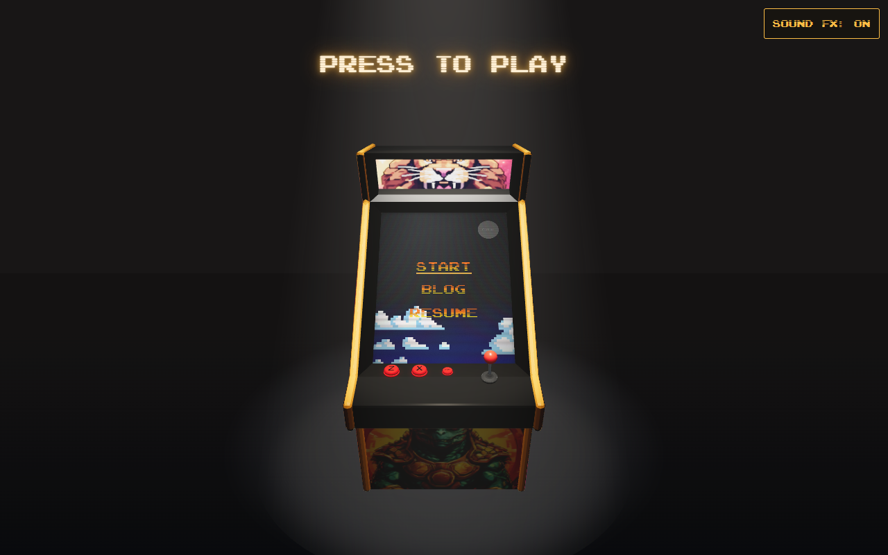
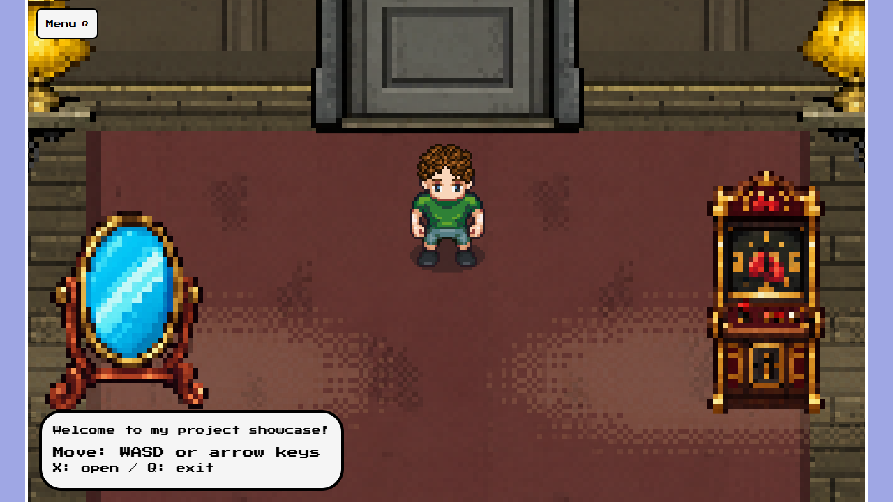
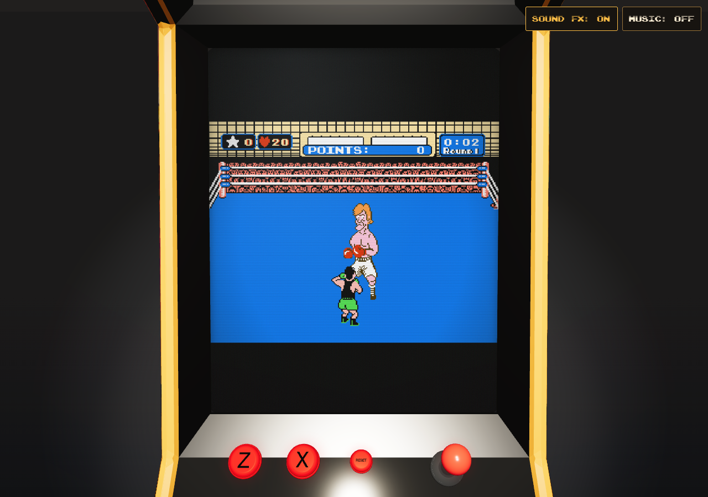
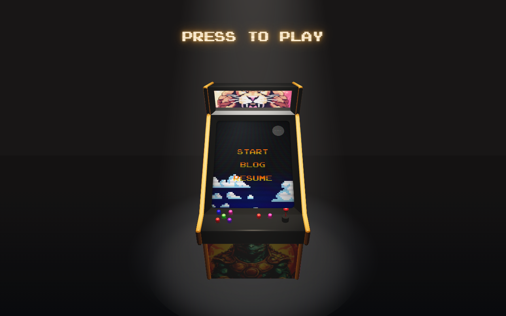
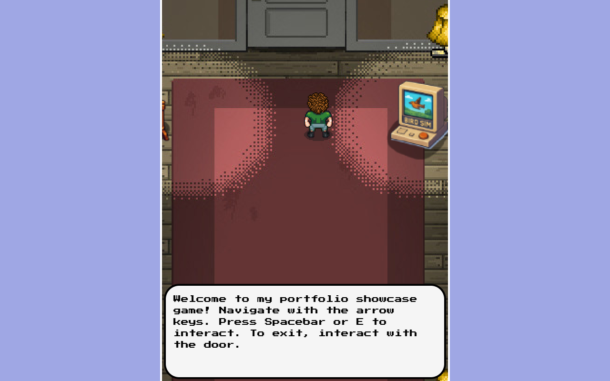
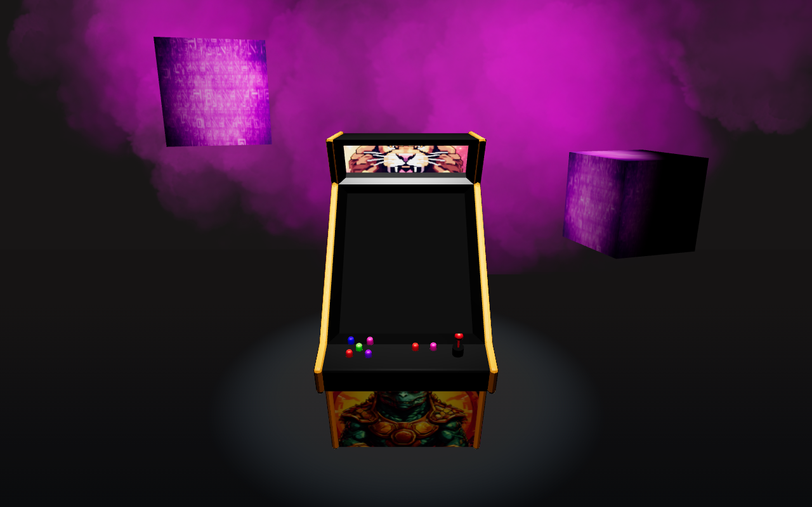
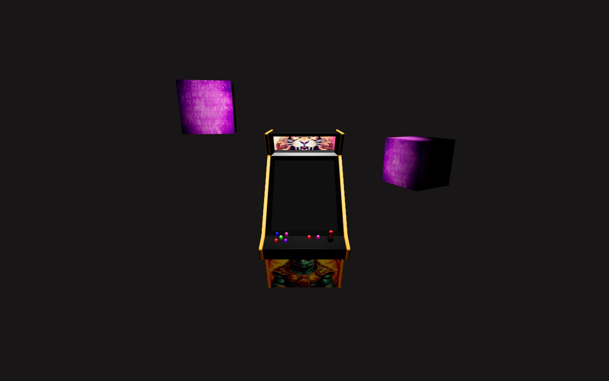
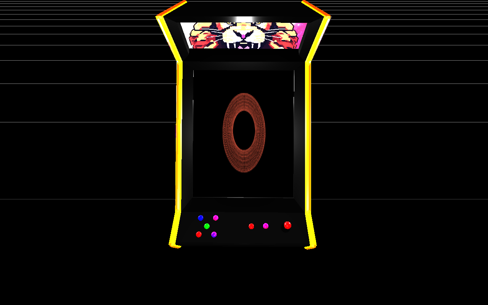

A couple more games
Find Cats joined You Lob Me under the portfolio's domain, with direct routes for both games.
The cabinet below is where the project stands today.

A cabinet, a portfolio, and a few detours along the way.
The bigger changes, with pictures.
Find Cats joined You Lob Me under the portfolio's domain, with direct routes for both games.
The cabinet below is where the project stands today.

The project showcase became an editable pixel museum. The original hallway returned as modular artwork, with a burgundy runner, wall lamps, and six exhibits to walk between.
Descriptions now appear as you approach. The map, furniture, and collision footprints are authored in Tiled.

Mike Tyson's Punch-Out!! became playable from an exhibit, inside the same cabinet screen. The joystick and action buttons feed an NES emulator, and returning to the museum restores your position.

The modeled joystick and buttons started controlling the portfolio: moving through the showcase, choosing menu links, and navigating the blog. Keyboard presses animate the hardware too.
Synthesized button clicks and joystick blips followed, with touch audio support and a Sound FX toggle. Background music arrived in the same update and was disabled on November 1.
The clouds and floating cubes gave way to a quieter scene. A theatrical spotlight, CRT glass, scanlines, and an amber Play sign put the cabinet first.
A loading screen and automatic camera zoom made entering the arcade work on phones too.

The arcade and portfolio joined one npm workspace. The cabinet, landing page, project showcase, and resume could finally run and deploy together.

Magenta clouds and a ground plane gave the cabinet an atmosphere. The screen pointed to the live portfolio, with touch camera interaction added alongside desktop hover.

The scene moved to React Three Fiber. Hovering the cabinet brought the camera closer, and two textured cubes floated beside the machine.

A textured Blender cabinet, a Three.js scene, and a canvas mapped onto the display. The early prototype already had a camera animation triggered by clicking the machine.
